SIHAYO-SAMBUNG MINING
Sihayo-Sambung gold project memegang izin Kontrak Karya (KK) generasi ke 7 yang dikeluarkan oleh pemerintah Indonesia pada tahun 1998 dengan luas total saat ini 66.200 hektar. Rencana tambang emas Sihayo-Sambung diperkirakan seluas 501 hektar dan akan mempunyai masa tambang selama 9 tahun. Sihayo-Sambung gold project terletak sekitar 15 km dari ibu kota Kab. Mandailing Natal, Panyabungan. Prospek ini pertama kali ditemukan pada tahun 1998 hingga akhirnya di lakukan eksplorasi lanjutan di wilayah Sihayo dimulai sejak akhir tahun 1990an. Kami sedang dalam proses menyelesaikan studi kelayakan membangun Tambang untuk mengekstrak dan memproses emas. Sihayo-Sambung gold project sudah masuk dalam tahapan pra-konstruksi untuk memulai aktivitas tambang emas.
Sihayo-Sambung terletak di wilayah zona aktif Trans Sumatra Fault Zone (TSFZ) dan pada sunda-banda magmatic arc yang ber umur Neogene, terbentuk atas tubrukan antar 2 lempeng membentuk zona subduksi. Sihayo-Sambung terdiri atas lapisan batuan calcareous sediment – volcaniclastic yang beumur Permian lalu di pisahkan oleh zona unconformity dengan lapisan batuan sediment muda yang berumur Tertiary/lebih muda sebagai batu pelapis (cap rock). Sihayo-Sambung mempunyai cadangan emas ber tipe Sedimentary Rock Hosted Disseminated Gold sistem dengan emas berukuran micron .
 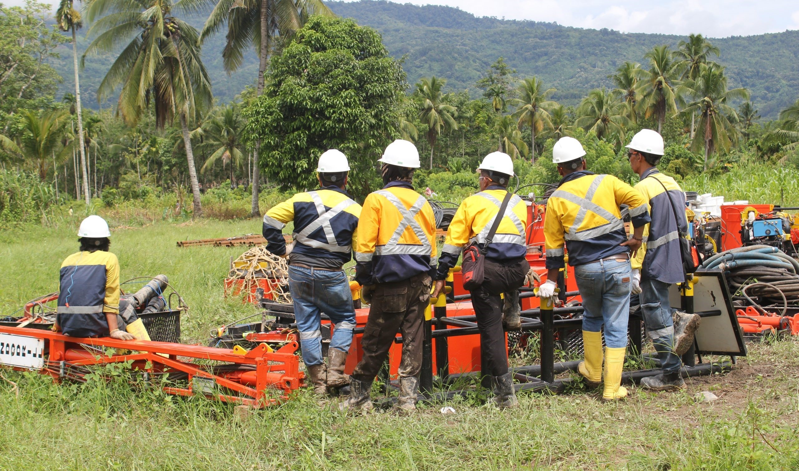
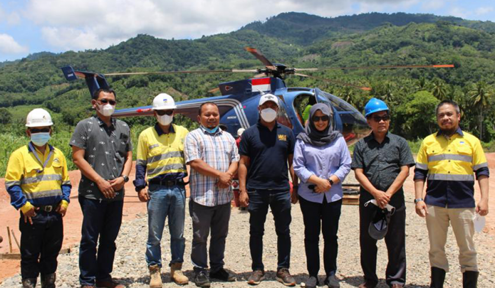
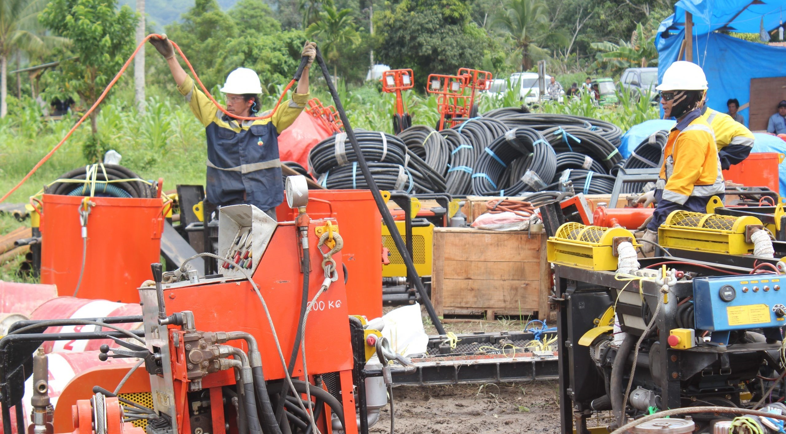
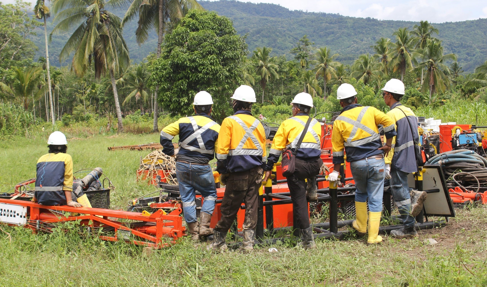
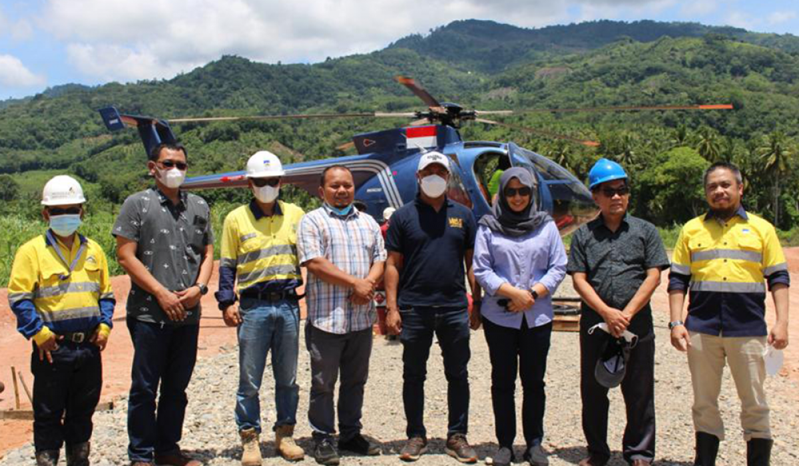
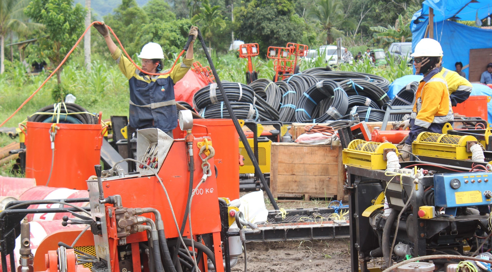
 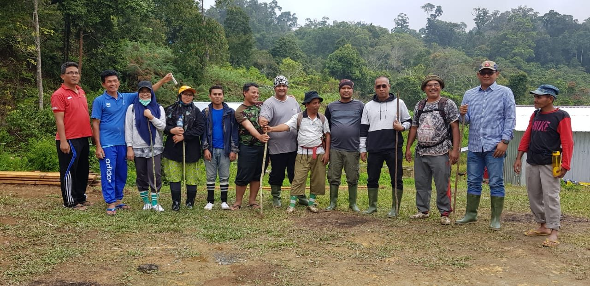
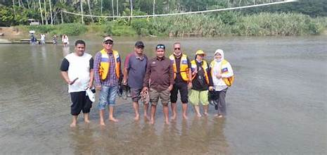
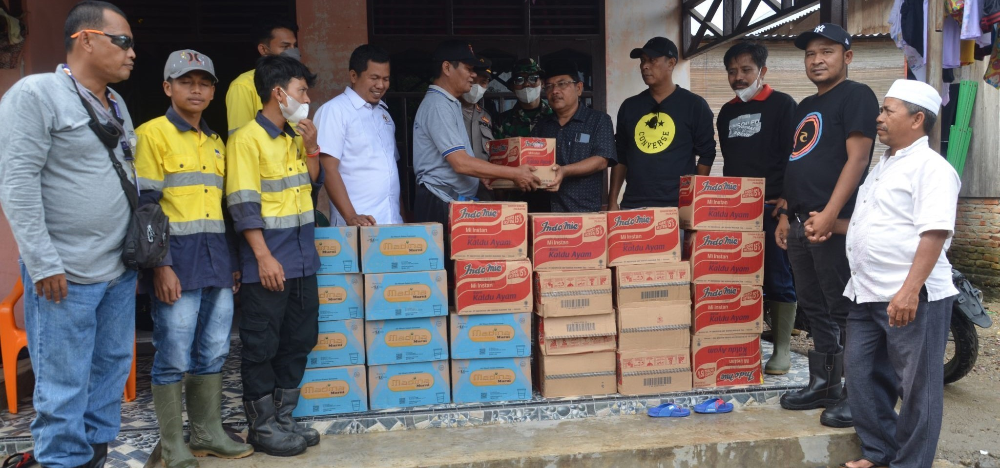
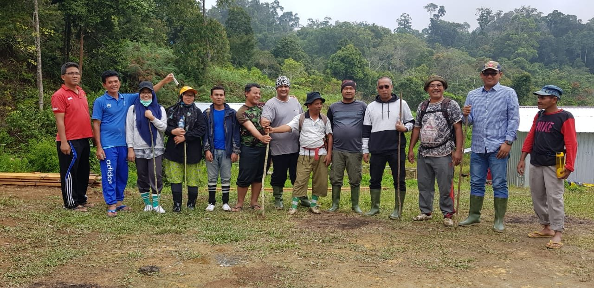
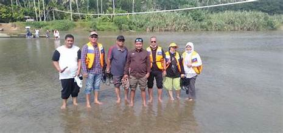
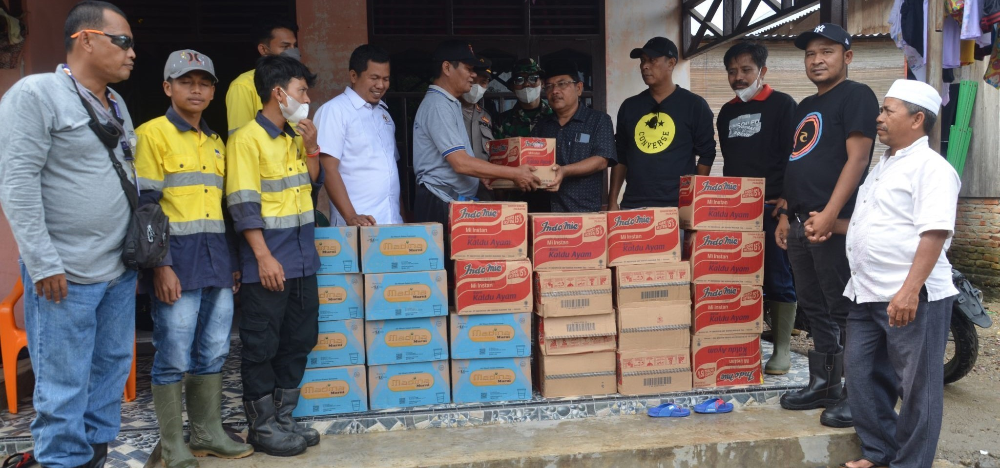